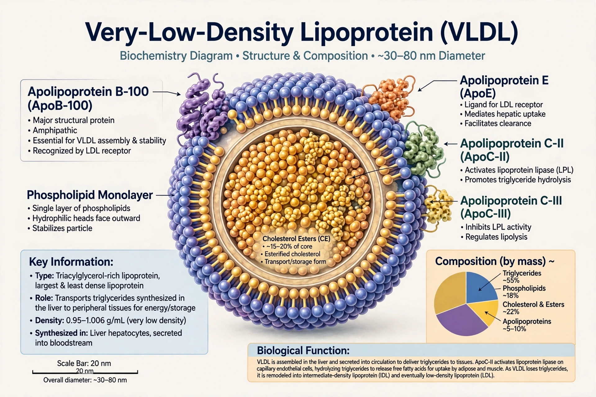

| VLDL | |
|---|---|
 | |
| Size | 30–80 nm |
| Main lipid | Triglycerides (~50-55%) |
| Key protein | Apolipoprotein B-100 |
Very-low-density lipoprotein (VLDL) is one of the five major groups of lipoproteins, assembled in the liver from triglycerides, cholesterol, and apolipoproteins. VLDL transports endogenous triglycerides from the liver to peripheral tissues.
Nascent VLDL contains ApoB-100 and acquires ApoC-II and ApoE in circulation. Lipoprotein lipase in capillaries hydrolyses its triglycerides, shrinking VLDL to remnant/IDL particles, which are either cleared by the liver or further converted to LDL. VLDL cholesterol is estimated in the Friedewald equation as triglycerides divided by 5 (in mg/dL).
Elevated VLDL accompanies hypertriglyceridemia, metabolic syndrome, and type 2 diabetes, and contributes to atherosclerotic risk and coronary artery disease. Unlike HDL, VLDL is considered atherogenic.